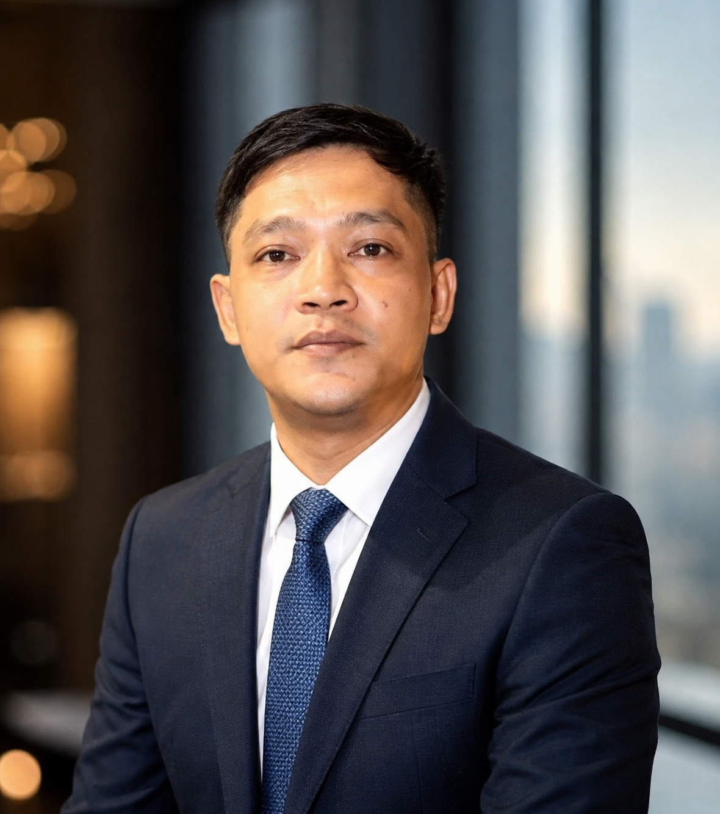

The Starting Point
I graduated from SMA 01 Sukatani. It was the beginning of my working life and the first step into a future I had yet to understand.
THE CREATOR · CHAPTER 01
A PERSONAL JOURNEY
Mine began with ordinary beginnings, different kinds of work, and a growing desire to build something of my own. This is the story behind the person creating RASAM.
Explore my journey
CHAPTER 02 · THE YEARS THAT SHAPED ME
My path did not start behind a screen. It started with hands-on work, learning by doing, and finding ways to keep moving forward.
I graduated from SMA 01 Sukatani. It was the beginning of my working life and the first step into a future I had yet to understand.
For two years, I worked sewing car-seat upholstery. The role taught me discipline, patience, consistency, and the importance of paying attention to detail.
I later worked as a warehouse picker and checker for around nine months. Every item, count, and process mattered.
For around nine months, I worked polishing piano casings. It strengthened my appreciation for careful finishing and quality in the details.
After working in different environments, I started a small business with limited capital. It began with a tobacco shop, then gradually grew into several services: electronics by instalment, mobile credit and top-ups, electricity tokens, bank transfers, e-wallet services, and retail fuel through a small petrol station.
I handled the day-to-day work myself — serving customers, sourcing products, arranging purchases, and managing transactions. It was a practical education in responsibility, customer service, and running operations.
CHAPTER 03 · THE TURNING POINT
Over time, business conditions became more difficult. At the same time, my mother needed care at home. I had to reconsider what came next and what kind of work could fit the responsibilities in front of me.
I made the difficult decision to pause my business and take a step back. It was not an easy transition. I also sold a bicycle I loved — not just an object, but something connected to a sport and a part of life that brought me joy.
For about three months, I paused and reflected. I did not have every answer. I only knew I needed to find a new direction.
CHAPTER 04 · ENTERING A NEW WORLD
I began exploring digital work because it offered a way to build a career while remaining available to care for my mother. It was a new environment, with unfamiliar tools and a lot to learn.
I joined the six-week SGB Virtual Assistant Course. Through its modules and practical tasks, I started developing my English, learning digital tools, and understanding how professional online workflows operate.
It was my entry point into a world where communication, organization, creativity, and technology could come together.
CHAPTER 05 · LEARNING THROUGH CREATION
Instead of keeping everything in theory, I focused on practicing with tools, building projects, testing workflows, and learning from each result.
EMAIL & AUTOMATION
Practicing email marketing with MailerLite and Klaviyo — from signup forms and subscriber management to campaign design, segmentation concepts, and welcome-flow setup.
ECOMMERCE
Creating a Shopify storefront for digital products, preparing product presentation, configuring the customer experience, and connecting email marketing workflows.
VISUAL & BRAND DESIGN
Exploring brand direction and visual communication through projects such as MONÉ Skin, alongside design work in Canva and Adobe Express.
WEB & DIGITAL WORKFLOWS
Learning HTML, CSS, and JavaScript while practicing with Google Workspace, Microsoft Office, Trello, research, and administrative workflows.
Every project is part of the learning process — built through practice, curiosity, iteration, and persistence.
CHAPTER 06 · THE BIRTH OF RASAM
As I explored design and technology, I wanted a place that could bring my work and my journey together — something more personal than a conventional portfolio.
The night sky and the Milky Way have always inspired my imagination. That sense of scale, discovery, and possibility became the starting point for RASAM Universe.
RASAM is my personal name. This universe is a reflection of the experiences that shaped me, the skills I continue to develop, and the creative possibilities I want to explore.
CHAPTER 07 · BEYOND BORDERS
I am still learning, building, and discovering where this path can lead. My goal is to keep creating thoughtful digital experiences, collaborate with people from different places, and grow through meaningful work.
The journey is still unfolding.
Return to the RASAM Universe